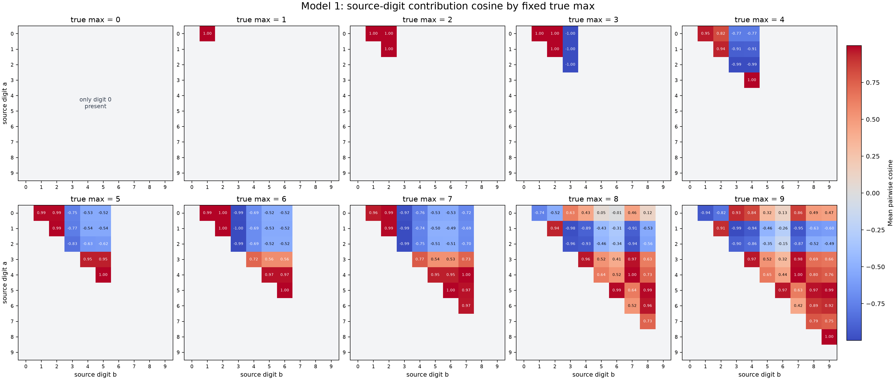
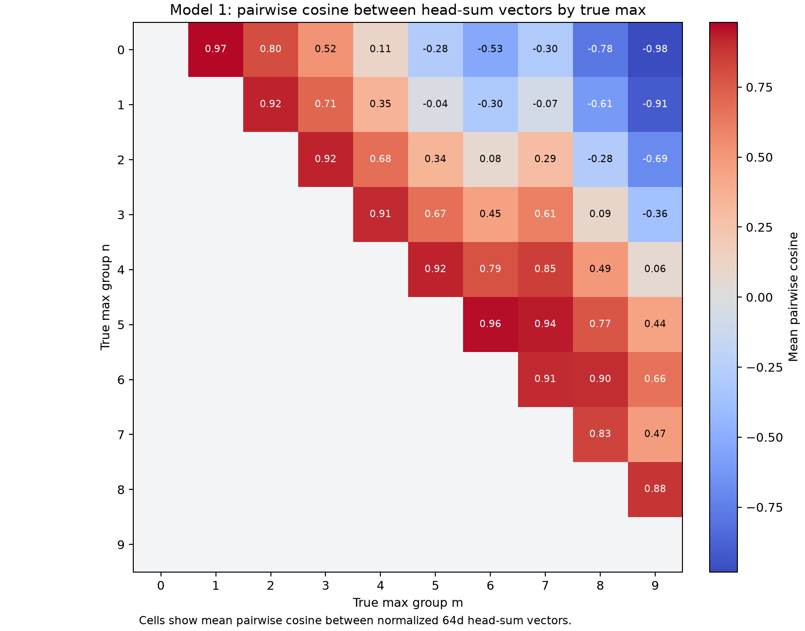

2026-07-09¶
Model 1: Source-Digit Head-Sum Contribution Geometry By Fixed True Max¶
Question:
For each fixed true max n, how do the 64d head-output contributions from
source digits compare with each other before unembedding? This is the
conditioned view: one matrix for max 0, one for max 1, and so on through
max 9.
Method:
A single input has one final [ANS] head-sum vector, so to get a
number-vs-number matrix inside each true-max group, decomposed the [ANS]
head output into source-number contributions. For each head h and source
number position p:
contrib_h,p = attention_h[ANS, p] * V_h(resid_p) @ W_O_h.T
source_digit_contrib_p = sum_h contrib_h,p # 1 x 64
For each input and each of the five number positions, this gives one 1 x 64
source-digit contribution vector before unembedding. Grouped these vectors by:
(true max, source digit)
Then normalized each vector and computed, for each fixed true max n, the
average pairwise cosine between source-digit groups a and b:
mean cosine(source_digit_contrib[a], source_digit_contrib[b] | true_max = n)
Duplicate query entries count as repeated source positions. Digits larger than the fixed true max cannot appear and are blank. The diagonal is also blank in the plot because the question is about different source digits.
Repro script:
scripts/analysis/model1_head_sum_source_digit_cosine_by_max.py.
Result:

Exact values: model1_head_sum_source_digit_cosine_by_max.json.
Interpretation:
This is the ten-panel conditioned view. Within each panel, the model often places source digits into a small number of angular clusters:
- For true max
1and2, low source digits are almost collinear. - When true max is
3, source digit3is nearly opposite to digits0..2. - For true max
4..7, digits0..2tend to form one cluster, while higher source digits form another, with source digit3often separating the two. - For true max
8and9, the geometry is more mixed: several high digits remain strongly aligned, but low digits can flip relative to the middle/high groups.
This result is about the per-source contribution vectors that sum into the
final [ANS] head output. It is therefore different from the next result,
which compares the final summed head-output vectors between true-max groups.
Model 1: Pairwise Head-Sum Geometry By True Max¶
Question:
Before multiplying by the unembedding, do the 1 x 64 head-sum output vectors
for different true maxima point in distinct directions? For each true max n,
what is the average cosine between its [ANS] head-sum vectors and the
head-sum vectors for the other true-max groups?
Method:
Enumerated all 100000 Model 1 inputs:
[BOS] n0 [SEP] n1 [SEP] n2 [SEP] n3 [SEP] n4 [ANS]
For each input, computed the actual [ANS] output of each head after the
corresponding W_O slice, then summed the four 64d vectors:
Hh_vec = head_values[:, 10, :] @ W_O_h.T
head_sum = H0_vec + H1_vec + H2_vec + H3_vec # 1 x 64 per input
unit_head_sum = head_sum / ||head_sum||
Grouped unit_head_sum by true max 0..9. For different true-max groups
n and m, computed the average pairwise cosine:
mean_{i:max_i=n, j:max_j=m} unit_head_sum_i @ unit_head_sum_j
The implementation uses the equivalent summed-vector form:
sum_unit[n] @ sum_unit[m] / (count[n] * count[m])
The plot shows only the upper-triangle off-diagonal cells because the question
is about different max groups. The JSON also reports within-group average
cosine excluding self-pairs. Repro script:
scripts/analysis/model1_head_sum_pairwise_max_cosine.py.
Result:

Exact values: model1_head_sum_pairwise_max_cosine.json.
Selected off-diagonal values:
| True max pair | Mean pairwise cosine |
|---|---|
| 0, 1 | 0.966934 |
| 0, 5 | -0.282587 |
| 0, 9 | -0.981599 |
| 2, 3 | 0.924352 |
| 4, 7 | 0.850560 |
| 5, 6 | 0.962886 |
| 6, 8 | 0.902812 |
| 8, 9 | 0.879901 |
Within-group head-sum directions are almost fixed. Excluding self-pairs, the
within-group average cosine is at least 0.995855 for all non-singleton true
max groups; max 0 has only one input, so it has no within-group value.
Interpretation:
The head-sum vector already has a strong angular code for the maximum before
unembedding. Adjacent or nearby true-max groups often have high cosine:
0 vs 1 is 0.966934, 2 vs 3 is 0.924352, 5 vs 6 is 0.962886,
and 8 vs 9 is 0.879901.
Far-apart groups become weakly aligned or opposite. Max 0 versus max 9 is
nearly opposite at -0.981599; max 1 versus max 9 is -0.907548; and
max 2 versus max 9 is -0.689910.
The geometry is not simply monotone distance from 0 to 9. For example,
max 7 is closer to max 4 (0.850560) and max 5 (0.935909) than to
max 9 (0.469583). This is consistent with the earlier result that the
head-sum readout is low-dimensional and structured, but not a pure scalar
number line.
Next step:
Compare this head-sum pairwise geometry to the pairwise geometry of the digit unembedding vectors themselves. That should show how much of the final decision boundary comes from head-sum direction versus unembedding readout geometry.